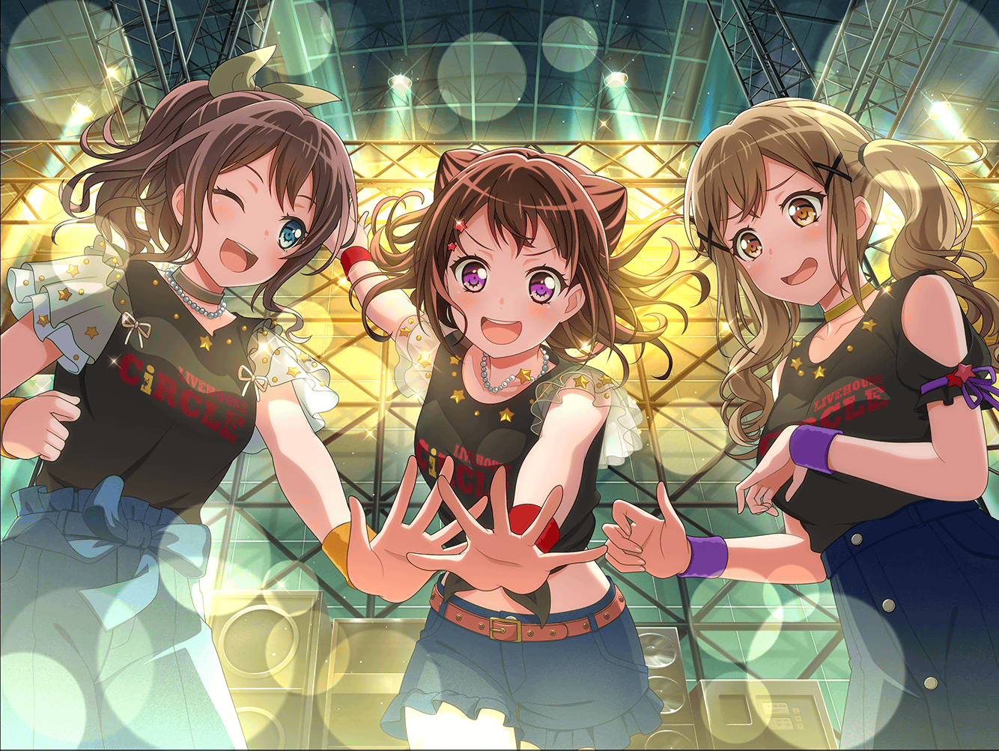

市ヶ谷家 蔵
香澄
はぁ～、まだ誰も来ないね～。
私と有咲２人だけじゃ、さすがに練習は始められないね
有咲
つーか香澄、来るの早すぎ……
集合時間までまだ１時間もあるじゃねーかよ
香澄
だって、イベントで披露する新曲の練習だよ！？
早くやりたくなっちゃったんだもん！
有咲
それにしたって１時間は早すぎるだろ？
みんなそれぞれ用事だってあるんだっつーの！
香澄
それじゃあ、みんなが来るまで何してよっかな？
有咲
お前はあれだろ？
最近、補習ばっかなんだから、英単語の１つでも――
香澄
有咲っ！
それは言わない約束でしょっ！？
有咲
そんな約束してねーだろ！
香澄
今は、イベントに集中したいんだよー。
イベントに向けて私達にできることを何かやっておきたいの！
有咲
つったって、私達がやれることって言ったら、
新曲の練習くらいだろ？
香澄
そーかなー？
もっといろんなこと、お手伝いしたいんだけどなー……
何かできることないかなー
香澄
……あ！
そうだっ！ いいこと思いついた！
有咲
でたー、その感じ。
すっげー嫌な予感するんだけど……っ！
香澄
ううん！ これは絶対にいい考えだって！
せっかくいろんな人が来てくれるイベントなんだから、
私達のことみんなに知ってもらえるように、チラシを作ろうよ！
香澄
ほら、ガールズバンドパーティの時も、誰かが言ってたじゃん。
『こういうのは大人が手を出しちゃいけない』って
香澄
ねっ！？
だからみんなが来るまで、有咲も一緒に作ろーよ！
有咲
……ったく。
はいはい、わかったわかった……
１０分後
香澄
え～～とぉ……新曲のタイトルは絶対必要じゃん？
あとはみんなの自己紹介と……
あ！ 生年月日も入れておかないとだよね～……
有咲
どうだ～、チラシの方ははかどってるか？
ちょっとジュース持ってきてやったぞー
香澄
ありがとー！
チラシも結構いい感じでできてきたと思うよ！
見て見てっ！
有咲
……どれどれ～？
てか、情報多っ！
ちょっとカオス過ぎるだろ、このチラシ！
香澄
そ、そっかな……？
有咲
ここの字なんて、めちゃめちゃ小さいしっ！
虫眼鏡で見ないと見えねーくらいになってるぞ！
香澄
しょうがないじゃん！
書きたいことがいっぱいあるんだもん！
有咲
この駅からCiRCLEへの地図も全然わかんねーから！
子供が描いた宝の地図か、これ？
香澄
うるさいなー！
そんなに言うなら有咲もチラシ作りなよーっ！
有咲
……しかたねーなー。
それじゃあ、あれでやってみるか……
香澄
え？ 何？
有咲
パソコン……
ちょっと今持ってくるから待ってろよ
香澄
ぱ、パソコン……っ！？
１０分後
香澄
わ、わわっ！
すっごい速さで文字を打ってるじゃん！？
ちょ、ちょっとすごすぎるよ、有咲……
香澄
有咲って……
本当にすごい人だったんだ……
有咲
そんな驚くことじゃねーだろ！？
今時、パソコンなんて誰だって使えるぞっ！？
香澄
そんなことないって！ 私はスマホしか使えないもん！
前に１回、挑戦したことあったけど、
よくわからなくって、結局挫折しちゃったよ〜
有咲
お、お前なぁ……
パソコンに挑戦とか挫折とか、そういうドラマ性はねーから
香澄
だけど、すっごい難しいんだもん。
……あ、そっか！ 有咲はキーボードが弾けるから、
こういうのもうまいのかもね！
有咲
全く関係ねーし！
てか、よくそんな感じで、ギターは弾けるようになったな？
香澄
ギターはだって、全然別じゃん！
香澄
ギターは弾けばちゃんと音が出るし、
指使いだって、パソコンと全然違うもん！
有咲
ムキになるなって！ こういうのは結局なんでも慣れなんだよ。
パソコンもギターも一緒で、普段からいじってれば
そのうち、なんとなく使えるようになるもんだ
香澄
そういうものかな……？
それじゃあ……私もやってみたい！
私にもパソコンやらせて！
有咲
……ま、別にいいけど？
ほら、やってみ
香澄
え、えっと……っ？
な、何からやったらいいかな？
有咲
別になんでも……
そしたらとりあえず『戸山香澄』って自分の名前でも
打ってみたらどうだ？
香澄
……え？
い、いきなり難しくない？
有咲
自分の名前だぞ！
初歩も初歩だっての！
香澄
わ、わかったよ、有咲っ！
それじゃあ私……やってみるねっ！
有咲
そ、そこまでの決意が必要なことか？
香澄
……え、えっと……とやまかすみ、だから……『と』だよね？
『と』は……え、えっと……
香澄
……あ、あのさぁ有咲。
なんかボタンに、ひらがなとローマ字、
２つ書いてあるんだけど……これはどういう……？
有咲
そ、そこからか……？
つーか、これじゃあいつまでたってもチラシなんて
出来上がんねーぞ！？
有咲
パソコンは今度また教えてやるから、とりあえず貸してみ！
有咲
ほら、チラシのこの辺に、取り込んである
ポピパの写真を入れるだろ！？
そんでこんな感じで――
香澄
わわっ！ なんか画面に写真が出てきたよっ！
……ええっ！？ 文字の色が変わった！
うわ～っ！ 文字の形も変わったんだけどーっ！
香澄
有咲！ ホントにすごいよっ！
う、うわ～～～っ！ 今度は英語が出てきたよっ！
有咲
ああもう！
いちいちうるせーっての！